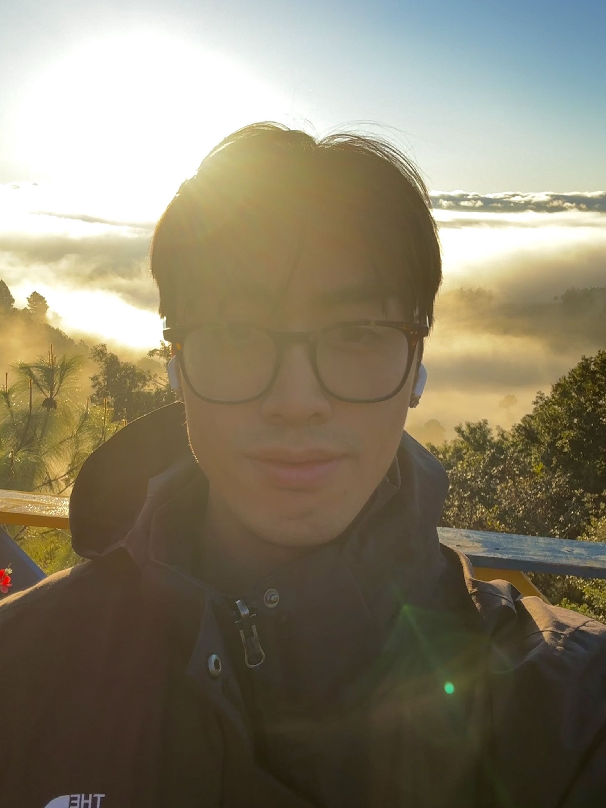

UT Arlington · Computer Science
Steven Dang
Software Engineer

Welcome to my site. I'm Steven Dang, a Computer Science student at the University of Texas at Arlington with an interest in database research.
I'm currently a Full-Stack Software Engineering Intern at Business Wire, where I build production software used by news organizations around the world.
Outside of software, I'm a coffee enthusiast and run a small weekend café pop-up in the Fort Worth area whenever I get the chance.